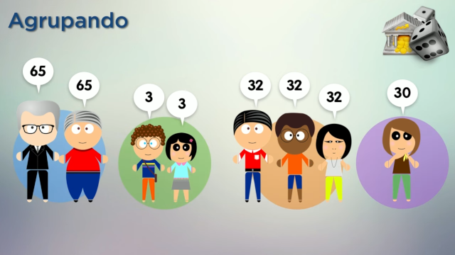
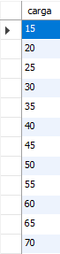

DISTINCT e do GROUP BY com HAVING.:

select carga from cursos
group by carga;
Resultado:

Agregando e Agrupando
select aulas, count(*) from cursos
group by aulas
order by aulas;
select*from aulas where aulas = 30;
Having (quem tem):
select ano, count(*) from cursos
where ano > 30
group by ano
having ano > 2020
order by count(*) asc;
Revisando AVG (Média):
select avg (carga) from cursos;
Agrupando por carga e contando(count):
select carga, count(*) from cursos
where ano>2020
group by carga
having carga > (select avg(carga) from cursos);